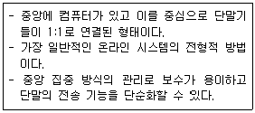
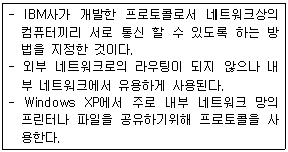

PC정비사-2급 (2011-01-30 기출문제)
1과목: PC유지보수
1. 컴퓨터 조립 시 메인보드와 하드디스크를 연결하기 위한 설명 중 잘못된 것은?
- P-ATA 하드디스크 두 개를 하나의 케이블에 연결하는 경우 하나는 Master로, 또 다른 하나는 Slave로 연결한다.
- P-ATA 하드디스크는 신호 케이블만 연결하면 되며 전원 케이블로 전원을 연결할 필요가 없다.
- S-ATA 하드디스크의 경우는 별도로 Master나 Slave를 점퍼로 구분하지 않는다.
- S-ATA 젠더를 사용하면 P-ATA 하드디스크를 S-ATA 케이블에 연결하여 사용할 수 있다.
(정답률: 71%)

2. Ghost에 대한 설명으로 잘못된 것은?
- 압축 수준 선택을 통해 백업을 할 수 있다.
- 원본데이터 크기보다 복제할 디스크의 크기가 작아도 된다.
- 하드디스크 전체를 이미지로 만들어 백업해 주는 유틸리티이다.
- 노턴 고스트의 경우, 병렬포트를 이용하여 두대의 컴퓨터를 연결하여 작업할 수 있다.
(정답률: 79%)
3. 하드디스크의 논리적인 Bad Sector를 제거하기 위한 방법으로 올바른 것은?
- BIOS Setup에서 하드디스크의 Type 설정을 변경한다.
- 휴지통을 비운다.
- Low Level Format을 실시한다.
- 디스크 조각 모음을 실행한다.
(정답률: 82%)
4. POST(Power-On Self Test) 과정에서 모니터 화면상으로 확인할 수 있는 사항으로 잘못된 것은?
- BIOS 제조업체와 버전
- 운영체제의 종류
- Memory Test 정보
- CPU작동 클럭
(정답률: 69%)
5. 드라이버에 대한 설명으로 잘못된 것은?
- 하드웨어를 최적화하는 소프트웨어의 일종이다.
- 설치된 운영체제에 적합한 드라이버를 설치해야 정상 작동한다.
- 최신 드라이버는 웹사이트에서 다운받아 사용할 수 있다.
- 하드웨어의 상태를 감시하여 고장을 찾아내는 역할을 한다.
(정답률: 72%)
6. PC에 전원을 넣은 후, POST가 진행되는 과정에서 화면이 멈춘 상태로 진행되지 않는 문제의 원인으로 잘못된 것은?
- CMOS Setup에서 메모리 관련 설정이 잘못되었다.
- 메모리의 불량이다.
- 시스템에 연결된 사운드 케이블의 불량이다.
- CPU의 오버클러킹으로 인하여 시스템이 불안정한 상태이다.
(정답률: 73%)
7. BIOS 설정 중 모든 장비에 대한 PNP 기능을 지원하는 경우 “Resources Controlled by” 의 설정 값으로 올바른 것은?
- Auto
- Active
- Manual
- Default
(정답률: 71%)
8. Windows XP의 고장 진단에 대한 설명으로 올바른 것은?
- 제어판에서 장치관리자를 열어 보면 문제가 발생한 장치 앞에 노란색의 '!'표가 있어서 쉽게 고장진단을 할 수 있다.
- ‘파일 조각 모음’ 기능을 이용하여 주기적으로 바이러스 치료를 해준다.
- 주변기기의 고장 진단은 [제어판] - [프로그램 추가/삭제] 기능을 확인해 보면 된다.
- Floppy Disk의 문제로 파일을 읽을 수 없을 때는 ‘디스크 공간 늘림’ 기능을 이용한다.
(정답률: 80%)
9. AMD CPU의 시스템 버스로 사용된 것으로, 그래픽카드 인터페이스나 메모리 등 고속의 버스가 필요한 부분을 노스브리지(north bridge)가 아닌 CPU에 바로 연결해 사용하여 CPU와 부품들 간의 병목 현상을 해결하기 위한 기술은?
- PCI 익스프레스(PCI Express)
- 하이퍼 트랜스포트(Hyper Transport)
- 허브 브리지(Hub Bridge)
- 크로스 파이어(Cross Fire)
(정답률: 65%)
10. 전자파와 VDT 증후군에 대한 설명으로 잘못된 것은?
- 전자파는 자계를 일으키는 모든 기기에서 발생한다.
- 컴퓨터 모니터를 장시간 보고 작업을 하면 시력이 약화 될 수 있다.
- 부적절한 작업 자세로 인하여 목, 어깨, 손목 등의 통증이 유발된다.
- CPU의 처리속도가 높을수록 전자파의 세기가 강해진다.
(정답률: 89%)
11. PC를 조립 설치하여 전원 버튼을 눌렀으나 모니터에 아무런 반응이 없는 경우 점검해야할 사항으로 잘못된 것은?
- 키보드와 마우스의 연결 상태를 확인한다.
- 메모리가 정상적으로 삽입되어 있는지 확인한다.
- 메인보드에 파워서플라이의 전원공급이 정상인지 확인한다.
- 그래픽카드가 정상적으로 설치되었는지 확인한다.
(정답률: 84%)
12. 현재 운영하고 있는 Web 서버에 사용자가 급증하여 응답 시간이 현저히 늦어지는 현상이 발생할 경우 시스템의 응답 시간을 빠르게 하기 위한 조치 방법으로 잘못된 것은?
- CPU 사용량을 확인하여, Web 서버 컴퓨터를 CPU가 여러 개로 구성된 병렬 컴퓨터 시스템으로 교체한다.
- 네트워크 전송량을 확인하여, Web 서버 컴퓨터가 연결된 전용선을 좀 더 용량이 큰 회선으로 교체한다.
- 메모리 사용량을 확인하여, Web 서버 컴퓨터의 주기억(Main Memory) 장치 용량을 늘린다.
- 하드디스크 사용 빈도를 확인하여, Web 서버 컴퓨터의 하드디스크 용량을 늘린다.
(정답률: 68%)
13. Windows XP에 포함된 드라이버 롤백 기능에 대한 설명 중 잘못된 것은?
- 컴퓨터 시스템 장치의 드라이버를 업그레이드 한 후 리소스 충돌들의 문제가 발생한 경우, 업그레이드 설치 이전의 상태로 되돌리기 위해 사용할 수 있다.
- 업데이트 바로 이전의 상태로만 되돌리는 것이 가능하며, 두 번 이상 변경된 드라이버를 건너 뛰어 되돌리는 것은 불가능하다.
- 프린터 드라이버도 되돌릴 수 있다.
- 드라이버 롤백으로 드라이버를 교체할 수는 있지만 제거할 수는 없다.
(정답률: 63%)
14. 회로시험기를 이용하여 연결선의 단선 여부를 알아내기 위한 회로시험기의 선택스위치 위치로 올바른 것은?
- ACV 전압측정 위치
- DCV 전압측정 위치
- OHM 측정 위치
- A(ampere)측정 위치
(정답률: 55%)
15. 시리얼 ATA 하드디스크 인터페이스에 대해 설명한 것 중 잘못된 것은?
- 병렬 방식보다 빠른 속도를 지원할 수 있다.
- 커넥터 당 1개의 하드디스크를 장착할 수 있다.
- 점퍼 설정으로 마스터와 슬레이브를 설정할 수 있다.
- 핫 플러깅을 지원한다.
(정답률: 62%)
2과목: PC운영체제
16. Windows XP에서 현재 내 컴퓨터와 연결되었거나 연결될 목록을 프로토콜과 함께 보여주는 명령어로 올바른 것은?
- gpedit
- msconfig
- system
- netstat
(정답률: 60%)
17. 운영체제에 따른 기본 파일시스템(파티션)의 종류가 올바르게 짝지어진 것은?
- DOS - FAT32
- Windows98 - NTFS
- Windows XP - NTFS
- Windows NT - FAT32
(정답률: 78%)
18. Windows XP에서 장치 관리자에 관한 설명 중 거리가 먼 것은?
- 장치 관리자는 모든 하드웨어의 정보를 확인하며 하드웨어의 추가/제거 등의 작업을 수행할 수 있다.
- 장치 관리자의 정보는 표시하는 방법에 따라 장치 종류별 또는 연결별 구분 표시가 가능하다.
- 자원별 표시를 통해 각 장치가 사용하는 메모리 용량을 확인 할 수 있다.
- 장치가 사용하는 IRQ등의 정보를 확인 할 수 있다.
(정답률: 57%)
19. Windows XP를 설치하기 전에 알아 두어야 할 사항으로 잘못된 것은?
- NTFS 파티션에 Windows XP를 설치했는데 다시 FAT32로 되돌아가고 싶다면, NTFS 파티션을 삭제한 다음 FAT32 파티션을 새로 만들어야 한다.
- Windows XP를 설치하면서 하드디스크의 파티션과 분할과 format 작업을 할 수 있으므로, 설치 전에 파티션을 나누지 않아도 된다.
- Windows XP에는 Professional ,Home Edition, Media Center Edition 버전이 있으며, 사용 용도에 맞게 버전을 선택한다.
- Windows 98 SE에서는 Windows XP Home Edition 버전으로 업그레이드 지원이 안 된다.
(정답률: 60%)
20. Windows XP 기본 응용프로그램의 명칭과 해당 실행파일명연결이 잘못된 것은?
- 워드패드 - wordpad.exe
- 그림판 - mspaint.exe
- 계산기 - calc.exe
- 인터넷 익스플로러 - explorer.exe
(정답률: 69%)
21. 사용자 데이터 원본을 다양한 데이터베이스 관리 시스템의 데이터에 액세스할 수 있도록 도와주는 관리 도구는?
- 데이터 원본(ODBC)
- 로컬 보안 정책
- 구성 요소 서비스
- 이벤트 뷰어
(정답률: 78%)
22. 운영체제의 역할 수행에 대한 설명으로 잘못된 것은?
- 작업의 연속적인 처리를 위한 관리를 수행한다.
- 하드웨어와 애플리케이션 사이에서 존재하는 프로그램이다.
- 사용자의 요구에 의해 개발되어진 프로그램으로 계산 업무를 수행한다.
- 주기억장치와 보조기억장치 사이의 데이터 전송, 정보 갱신, 유지 등의 기능을 수행한다.
(정답률: 67%)
23. Windows XP의 시작프로그램 및 작업표시줄 트레이에 상주되는 프로그램들의 상주 여부를 설정하기 위해 사용되는 명령어로 올바른 것은?
- sysedit
- winipcfg
- msconfig
- cmd
(정답률: 72%)
24. Windows XP에 내장된 인터넷 익스플로러 프로그램의 인터넷 옵션에서 할 수 있는 일에 대한 설명으로 잘못된 것은?
- 브라우저를 시작할 때 표시되는 최초 웹 페이지를 지정할 수 있다.
- 컴퓨터에 저장된 임시 인터넷 파일을 삭제할 수 있다.
- 내용 관리자를 사용하여 불건전한 내용에 대한 액세스를 차단하고, 웹 페이지에 색 및 글꼴이 표시되는 방법을 지정할 수 있다.
- 보안수준의 설정은 할 수 없으나 전자 메일과 인터넷 뉴스 그룹을 읽을 때 사용하는 프로그램을 지정할 수 있다.
(정답률: 77%)
25. Windows Update 사이트에 대한 설명으로 잘못된 것은?
- 모든 하드웨어 업체의 최신 드라이버 파일을 다운로드하여 설치할 수 있다.
- 인터넷 익스플로러 보안 업데이트 패치를 다운로드하여 설치할 수 있다.
- Internet Explorer, DirectX, Windows Media Player 등을 다운로드하여 설치할 수 있다.
- Windows XP에서 기본적으로 지원한다.
(정답률: 69%)
26. Windows XP에서 PnP 기능이 제대로 작동하지 않을 경우 장치를 설치하기 위한 제어판의 메뉴로 올바른 것은?
- 시스템
- 관리도구
- 새 하드웨어 추가
- 프로그램 추가/제거
(정답률: 62%)
27. Windows XP에서 네트워크 설정을 확인하기 위한 설명 중 잘못된 것은?
- ‘ipconfig‘ 명령은 Windows 98 및 Windows 95에서 사용할 수 있는 ‘winipcfg’ 명령과 유사한 기능을 하는 명령어이다.
- Windows XP에는 ‘winipcfg’ 명령이 실행되지 않으나, [네트워크 연결]에서 해당하는 연결의 [속성]을 확인하면 IP 주소를 보거나 갱신할 수 있다.
- ‘ipconfig’를 매개 변수 없이 사용할 경우 기본 게이트웨이 주소는 확인할 수 없다.
- ‘ipconfig -all’을 실행하면 모든 어댑터의 IP 주소 및 MAC 주소를 알 수 있다.
(정답률: 69%)
28. Windows XP에서 파일을 휴지통에 보관하지 않고 곧바로 삭제하기 위한 단축키는?
- Tab + Del
- Shift + Del
- Alt + Del
- Ctrl + Del
(정답률: 84%)
29. 직접 시스템 루트나 Windows XP 운영체제가 저장된 장소로 매핑되는 관리 공유는?
- C$
- D$
- ADMIN$
- IPC$
(정답률: 69%)
30. "악성코드/바이러스/웜"의 종류로 잘못된 것은?
- 악성 쿠키
- 하이재커
- 스파이웨어
- 쿠키
(정답률: 81%)
3과목: PC주변기기
31. 정적램(SRAM)에 대한 설명으로 올바른 것은?
- 플립플롭 방식의 메모리 셀을 가진 임의접근 기억장치이다.
- 동작속도가 매우 빨라 대용량 기억장치에 많이 사용된다.
- 전원이 공급되어도 주기적으로 충전해야 기억된 자료가 유지된다.
- 정적램은 동적램(DRAM) 보다 속도가 5배 정도 느리다.
(정답률: 60%)
32. CD-ROM 드라이브를 CD를 넣는 방식에 따라 분류한 것으로 잘못된 것은?
- 캐디 방식
- 소켓 방식
- 트레이 방식
- 슬롯 방식
(정답률: 54%)
33. SVGA의 해상도가 1,024x768이고, 이 해상도에서 1,670만의 색상을 표현하려면 24Bit의 색상심도가 있어야 한다. 이때 필요한 최소 비디오 메모리의 크기로 올바른 것은?
- 2.50MB
- 1.50MB
- 2.0MB
- 1.0MB
(정답률: 54%)
34. RAM의 장착방식에 따른 분류로 잘못된 것은?
- DIP
- DIMM
- RIMM
- PCI
(정답률: 66%)
35. 마우스에 대한 설명으로 옳은 것은?
- 2버튼식은 초기 매킨토시에서 사용되던 것으로 애플 마우스라 불린다.
- 시리얼식은 병렬 포트로 연결되며, USB 방식은 확장 슬롯에 직렬로 연결된다.
- 동작 방법에 따라 기계식, 광학식, 광학기계식으로 나뉜다.
- 버튼의 종류에 따라 시리얼과 PS/2, USB식으로 나뉜다.
(정답률: 54%)
36. 입출력 장치에 대한 데이터의 전송에서 중앙 처리 장치(CPU)의 간섭 없이 고속으로 데이터를 전달하기 위해 사용되는 방법으로 올바른 것은?
- On Line Operation
- DMA
- Spooling
- Buffering
(정답률: 73%)
37. 하드디스크 드라이브를 구성하는 요소로 잘못된 것은?
- 읽기 쓰기 헤드
- 플래터
- 램댁
- 버퍼 메모리
(정답률: 61%)
38. CRT 모니터의 성능을 결정하는 가장 중요한 요소 중, 도트피치에 대한 설명으로 잘못된 것은?
- 도트피치 간격이 커야 컬러가 선명하다.
- 브라운관에서 빛이 새어나오는 간격을 수치상으로 표시한 것이다.
- 주로 고급형일수록 도트피치 간격이 좁다.
- 애퍼처 그릴(Aperture Grille) 방식의 모니터에서는 도트피치 대신에 슬롯피치라는 표현을 사용한다.
(정답률: 73%)
39. 직렬 방식의 통신이 아닌 것은?
- USB
- IEEE1394
- RS232C
- PCI BUS
(정답률: 51%)
40. CD-ROM 드라이브와 DVD-ROM 드라이브의 1배속으로 올바른 것은?
- CD-ROM - 150KB/s, DVD-ROM - 700KB/s
- CD-ROM - 135KB/s, DVD-ROM - 1350 KB/s
- CD-ROM - 150KB/s, DVD-ROM - 1350KB/s
- CD-ROM - 135KB/s, DVD-ROM - 700KB/s
(정답률: 64%)
41. 뮤직 신디사이저, 악기, 컴퓨터 등을 상호 접속이 가능하도록 하는 인터페이스 규격으로 올바른 것은?
- MPEG
- MPC
- BUS
- MIDI
(정답률: 77%)
42. USB에 대한 설명으로 잘못된 것은?
- 하나의 주 컨트롤러에 최대 127개까지 연결할 수 있다.
- USB의 전원 공급 기능을 이용하여 충전 용도로도 사용된다.
- 일반적으로 메인보드에는 최소 2개 이상의 USB 포트가 제공된다.
- USB 케이블을 통해 3V의 전원이 공급된다.
(정답률: 74%)
43. 부트 섹터(Boot Sector)의 정보로 잘못된 것은?
- 트랙 당 섹터의 개수
- 헤드의 개수
- 파일 할당 테이블의 개수
- 실질적인 파일의 내용
(정답률: 67%)
44. 프린터의 해상도를 의미하는 DPI에 대한 설명으로 잘못된 것은?
- 300DPI는 가로, 세로 1인치당 각각 300개의 점을 찍을 수 있다.
- 해상도가 낮은 파일보다는 해상도가 높은 파일의 인쇄 속도가 빠르다.
- DPI는 Dots Per Inch의 약자이다.
- 수치가 클수록 해상도가 높다.
(정답률: 73%)
45. 사용자와 가장 가까이 있고 데이터의 송수신을 컨트롤하는 핵심장비이며, 네트워크에서는 수백~수천 바이트의 데이터를 하나로 묶어 패킷 단위로, 데이터를 빠른 속도(이더넷 표준 10Mbps)로 전송하는 장비는?
- NIC
- Router
- Bridge
- Switch
(정답률: 46%)
4과목: PC네트워크
46. IPv6가 IPv4보다 개선된 점으로 잘못된 것은?
- 확장된 IP 주소 공간(Expanded Addressing)
- 규모 조정이 가능한 라우팅(Scalable Routing)
- 네트워크에서의 감사기능과 보안기법 제공
- 멀티캐스트 대신 브로드캐스트 사용
(정답률: 73%)
47. 아래 내용의 통신망 구성 형태로 올바른 것은?

- 버스형
- 망형
- 스타형
- 링형
(정답률: 74%)
48. 두 개 이상의 동일한 LAN 사이를 연결하여 네트워크 범위를 확장하고 스테이션 간의 거리를 확장해 주는 장치로 올바른 것은?
- Repeater
- Router
- Ramdac
- Gateway
(정답률: 57%)
49. 아래 내용의 통신 프로토콜로 올바른 것은?

- NetBIOS
- IPX/SPX
- TCP/IP
- SNMP
(정답률: 62%)
50. OSI 참조 모델의 7계층 중 구문 변환과 문맥 제어 서비스를 제공하는 계층으로 올바른 것은?
- 세션 계층
- 응용 계층
- 네트워크 계층
- 프리젠테이션 계층
(정답률: 50%)